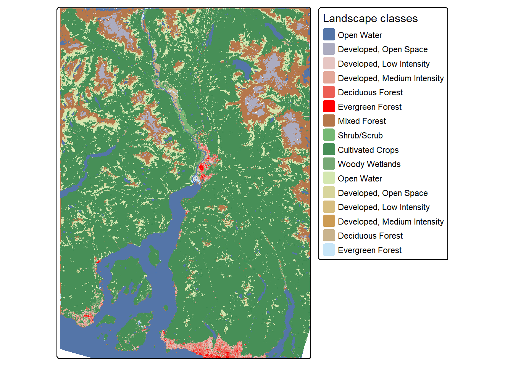
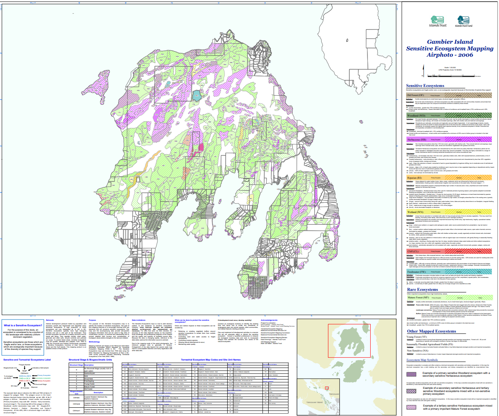
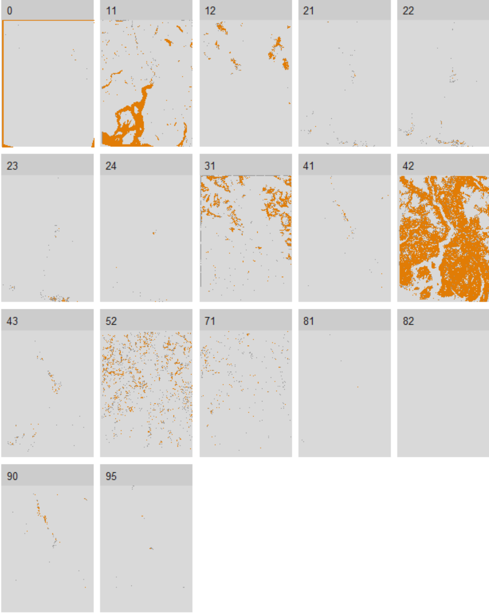
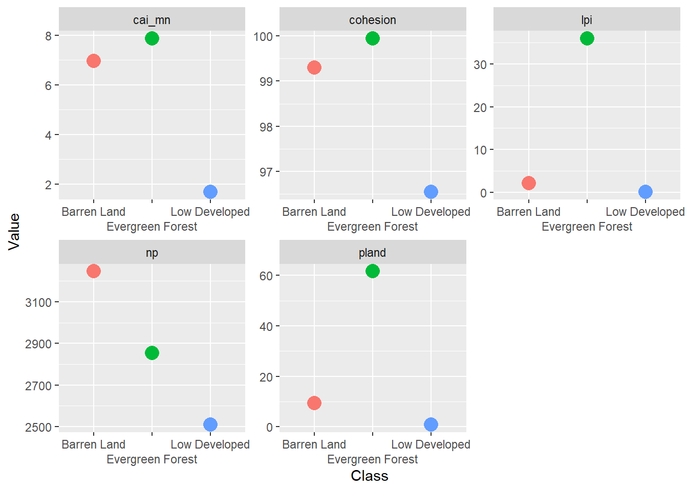

Marbled Murrelet Habitat Connectivity
Introduction
This study aims to investigate the relationship between nesting habitats of the Marbled Murrelet and mapped sensitive ecosystems on Gambier Island in British Columbia. Using a patch-based connectivity model evaluating habitat availability called Grains of Connectivity (GoC), the research will focus on the critical habitat of the Marbled Murrelet and their spatial relation to existing Old Growth Management Areas (OGMA). This study aims to provide insight on the habitat fragmentation and the spatial connectivity in hopes to provide leverage for effectively conserving this critical species at risk and fragile ecosystems.
Gambier Island, also known as Cha7élkwnech in the Squamish language, is located in the Howe Sound near Vancouver, BC. Encompassing roughly 70 square kilometers of complex landscapes and sensitive ecosystems (Figure 1), the present forests serve as important habitats for a range of endangered species (Butler et al., n.d.). The historical pressures from logging, human settlement, and recreation have affected the biodiversity of the landscape and requires vigilant assessment to maintain a healthy ecosystem.
The Marbled Murrelet is a threatened seabird that has the potential to be strongly influenced by forest fragmentation and edge effects (Malt and Lank 2009). They spend most of their time searching for food in coastal waters, but unlike other seabirds, they can fly up to 50km inland to nest (Nelson 2020) and are strongly associated with late-successional and old-growth forests, buildings its’ nests on large branches in tall trees (Raphael, Mack, and Cooper 2002). The species was listed under the Species at Risk Act in 2012 and has been identified as a priority for conservation in many regional conservation strategies in Canada (Bertram et al. 2015).
Methods
The data for this study comes from two primary data sources. The first source is the Island Trust, a special purpose government serving the islands in the Salish Sea and Howe Sounds responsible for preserving and protecting the islands’ environments (Forests, n.d.). The second source is the Critical Habitat for Species at Risk National Dataset of Canada created by Environment and Climate Change Canada (ECCC) for terrestrial species (Canada and Change, n.d.). These two data sets will be analyzed using R and ArcGIS Pro software and serve for the ecological network connectivity analysis.
The first step in this analysis is to rasterize the Sensitive Ecosystem Mapping (SEM) Air photo such that it can be used to create a land classification for the connectivity analysis. The second step is to do a similar rasterization of the Marbled Murrelet data and attribute link threshold characteristics to the seabird data set like flight distance capabilities and preferential flight pathing. Similarly, resistance values need to be assigned to the terrestrial classified landscape in order to create a minimum planar graph (MPG). These resistance values will affect the movement of Marbled Murrelet through the landscape and are necessary to understand the species connectivity and reliance on specific ecosystems.

After the rasterization and landscape reclassification of the SEM, OGMA and Marbled Murrelet habitat, a series of ecological analyses will be performed. Specifically, a network analysis utilizing the MPG to create a least-cost path model for the Marbled Murrelet, and with varying threshold values, a grains of connectivity (GoC) analysis. A variety of landscape metrics using the landscapemetrics package in R will be applied to the reclassified ecosystems including PLAND (percentage of landscape), NP (number of patches), CAI_MN (mean of core area index), LPI (largest patch index) and other metrics useful to determine the fragmentation and ecosystem edges.
Once we have our classified landscape, we can use the landscape metrics to extract the core areas and patches using specific landscape_metrics functions. Below is the resulting core areas of the Howe Sound landscape.
 Now that we have our core areas, lets compare structural connectivity between barren land, evergreen forests, and low developed classes.
We’ll compare the following metrics at the class-level:
- CAI_MN: Mean of core area index (Core area metric)
- COHESION: Patch Cohesion Index (Aggregation metric)
- LPI: Largest patch index (Area and Edge metric)
- NP: Number of patches (Aggregation metric)
- PLAND: Percentage of landscape of class (Area and Edge metric)

Expected Results & Significance
This study is expected to show a connection between the preferred nesting habitats of the Marbled Murrelet, where they are located in relation to the mapped ecosystems on Gambier Island, and their proximity to the OGMAs. The analysis will likely reveal that edge forests, old growths, and other mature forested areas on the Island correlate to the birds’ nesting habitat, in other words, provide crucial habitat sites for the species. There will likely be a connection between the extent of forested edges and its influence on the nesting habitats as the Murrelet.
The connectivity analysis will highlight the links between the critical habitats and classified ecosystems, identifying preferential pathways for the Murrelet as well as barriers to their movement. It is likely that the values of calculated metrics will confirm the fragmentated state of the bird’s habitat and current OGMAs, supporting the need for further improvement of land protection and conservation efforts. It will link the locality and fragmentation of the OGMAs to Gambier’s SEM and Murrelet habitat. Ultimately, by identifying critical connections and areas of fragmentation, this study will inform future efforts to reduce habitat loss and improve landscape connectivity for species conservation on Gambier Island.
References
Bertram, Douglas F., Mark C. Drever, Murdoch K. McAllister, Bernard K. Schroeder, David J. Lindsay, and Deborah A. Faust. 2015. “Estimation of Coast-Wide Population Trends of Marbled Murrelets in Canada Using a Bayesian Hierarchical Model.” PLOS ONE 10 (8): e0134891. https://doi.org/10.1371/journal.pone.0134891.
Butler, Robert W, Rod MacVicar, Andrew R Couturier, Sonya Richmond, Eva Dickson, and Patricia Beaty. n.d. “Status and Distribution of Marine Birds and Mammals in Southern Howe Sound, British Columbia.”
Canada, Environment, and Climate Change. n.d. “Critical Habitat for Species at Risk National Dataset - Canada - Open Government Portal.” https://open.canada.ca/data/dataset/47caa405-be2b-4e9e-8f53-c478ade2ca74.
Forests, Ministry of. n.d. “Forest Stewardship - Province of British Columbia.” https://www2.gov.bc.ca/gov/content/industry/forestry/managing-our-forest-resources.
Malt, Joshua M., and David B. Lank. 2009. “Marbled Murrelet Nest Predation Risk in Managed Forest Landscapes: Dynamic Fragmentation Effects at Multiple Scales.” Ecological Applications 19 (5): 1274–87. https://doi.org/10.1890/08-0598.1.
Nelson, S. Kim. 2020. “Marbled Murrelet (Brachyramphus Marmoratus), Version 1.0.” Birds of the World. https://doi.org/10.2173/bow.marmur.01species_shared.bow.project_name.
Raphael, Martin G., Diane Evans Mack, and Brian A. Cooper. 2002. “Landscape-Scale Relationships Between Abundance of Marbled Murrelets and Distribution of Nesting Habitat.” The Condor 104 (2): 331–42. https://doi.org/10.1093/condor/104.2.331.